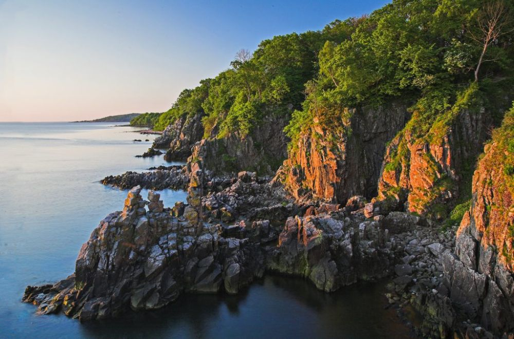

Descoperă insula Bornholm - O călătorie în Danemarca
Insula Bornholm este un loc fermecător situat în Marea Baltică, oferind o varietate de atracții interesante pentru vizitatori:
-

Castelul Hammershus din Bornholm - Cetate istorică
Vizitați cea mai mare cetate medievală din Scandinavia, care oferă vederi spectaculoase asupra mării.
-

Rønne - Orașul principal din Bornholm
Explorați acest oraș pitoresc, plin de case colorate și atmosferă relaxată.
-

Stâncile Alcove din Bornholm - Frumuseți naturale
Descoperiți formațiunile stâncoase spectaculoase de pe coasta insulei, cunoscute sub numele de "Alcove Rocks".
-

Muzeul de Artă din Bornholm - Artă și cultură
Apreciati operele de artă daneză și internațională în cadrul acestui muzeu captivant.
-

Ciclism în Bornholm - Explorare activă
Închiriați o bicicletă și explorați insula pe rețeaua sa extinsă de piste pentru biciclete.
Concluzii
Insula Bornholm oferă o varietate unică de atracții naturale, culturale și istorice, potrivite pentru călătorii de toate vârstele.